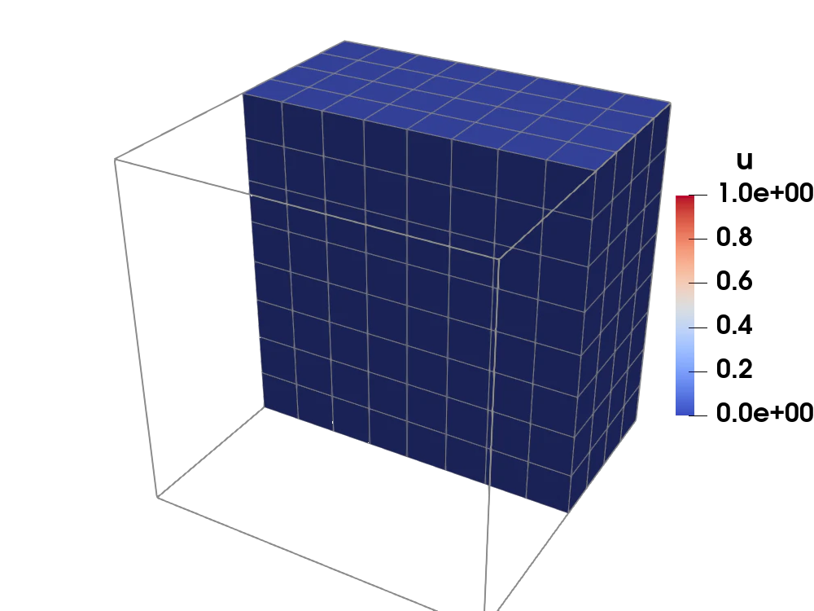
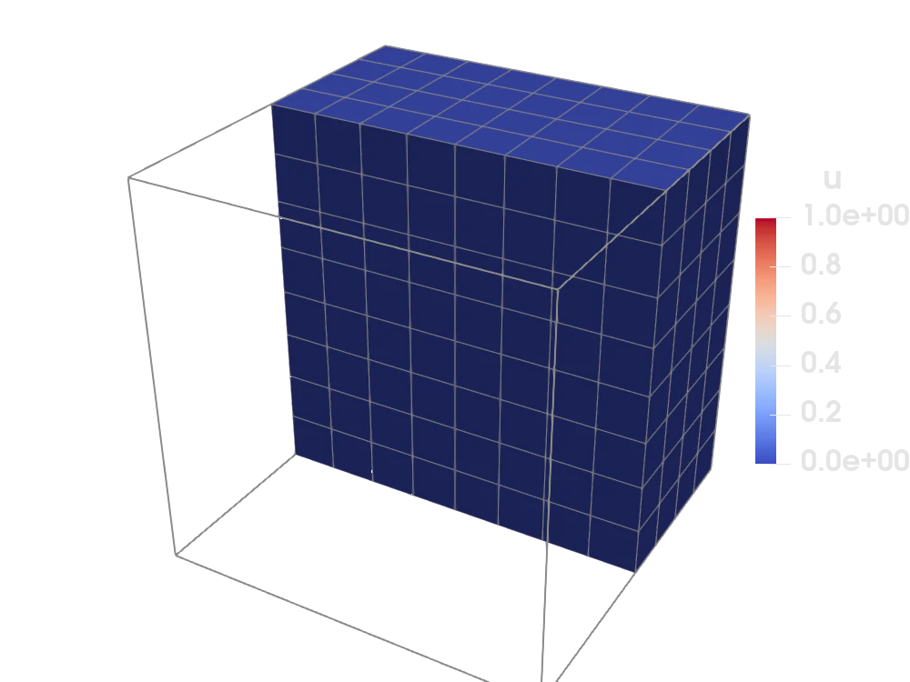

Heat equation with adaptive mesh refinement


Figure 1: The adaptive refinement loop, shown on a cross section of the cube. On the coarse initial meshes the solution is badly polluted; as the mesh refines around the sharp spherical feature the solution converges.
Introduction
This tutorial demonstrates adaptive mesh refinement (AMR) for a 3D heat equation using Ferrite's ForestBWG — a p4est-style forest-of-octrees data structure. We solve a Poisson problem with a manufactured solution that has a sharp spherical feature, driving refinement with a Zienkiewicz-Zhu (ZZ) error estimator and Dörfler marking.
The strong form of the problem reads
\[ -\Delta u = f \quad \textbf{x} \in \Omega = [-1,1]^3,\]
with homogeneous Dirichlet boundary conditions $u = 0$ on $\partial\Omega$. The right-hand side $f$ is chosen via the method of manufactured solutions so that the exact solution is a Gaussian ring
\[ u_{\mathrm{exact}}(\textbf{x}) = \exp\!\Bigl(-\bigl(\tfrac{\|\textbf{x}\|-0.5}{\varepsilon}\bigr)^2\Bigr), \quad \varepsilon = 0.05,\]
which is essentially zero at the boundary and has a sharp peak on the sphere $\|\textbf{x}\|=0.5$.
For an introduction to the concepts behind AMR — hanging nodes, 2:1 balancing and error estimation — see the AMR topic guide. In the gallery we also show how to adaptively solve an elasticity problem together with a Kelly error indicator.
Commented program
First we load the required packages.
using Ferrite, IterativeSolvers, WriteVTKGrid setup
We create a structured 4×4×4 hexahedral grid on $[-1,1]^3$ and wrap it in a ForestBWG that allows up to 10 levels of refinement. One uniform refinement gives us a reasonable starting mesh of 512 cells.
base_grid = generate_grid(Hexahedron, (4, 4, 4));grid = ForestBWG(base_grid, 10)refine_all!(grid, 1);Manufactured solution
The exact solution is a Gaussian ring concentrated on the sphere $\|\textbf{x}\|=0.5$ with width $\varepsilon = 0.05$. It is essentially zero at the origin and at the boundary of the cube, so homogeneous Dirichlet conditions are appropriate. Note that the width must be resolvable by the mesh: a much sharper feature than this would be misintegrated by the quadrature on the coarse initial mesh, which pollutes the discrete solution globally. The right-hand side is obtained by applying the negative Laplacian via automatic differentiation (Tensors.laplace).
analytical_solution(x) = exp(-((norm(x) - 0.5) / 0.05)^2)analytical_rhs(x) = -laplace(analytical_solution, x)Element assembly
Standard Galerkin assembly for the Poisson equation — this function and the global assembly below are essentially as in the heat equation tutorial; nothing about the element routines changes for AMR. For each quadrature point we evaluate the manufactured right-hand side at the physical coordinate.
function assemble_cell!(ke, fe, cellvalues, coords) n_basefuncs = getnbasefunctions(cellvalues) for q_point in 1:getnquadpoints(cellvalues) x = spatial_coordinate(cellvalues, q_point, coords) dΩ = getdetJdV(cellvalues, q_point) for i in 1:n_basefuncs Nᵢ = shape_value(cellvalues, q_point, i) ∇Nᵢ = shape_gradient(cellvalues, q_point, i) fe[i] += analytical_rhs(x) * Nᵢ * dΩ for j in 1:n_basefuncs ∇Nⱼ = shape_gradient(cellvalues, q_point, j) ke[i, j] += ∇Nⱼ ⋅ ∇Nᵢ * dΩ end end end returnendGlobal assembly
Loop over all cells, reinitialize CellValues for the current cell geometry, compute the element contribution and assemble into the global system.
function assemble_global!(K, f, dh, cellvalues) n_basefuncs = getnbasefunctions(cellvalues) ke = zeros(n_basefuncs, n_basefuncs) fe = zeros(n_basefuncs) assembler = start_assemble(K, f) for cell in CellIterator(dh) reinit!(cellvalues, cell) coords = getcoordinates(cell) fill!(ke, 0.0) fill!(fe, 0.0) assemble_cell!(ke, fe, cellvalues, coords) assemble!(assembler, celldofs(cell), ke, fe) end return K, fendSolve on a single grid
Given a (non-conforming) grid, set up the FE problem with trilinear hexahedral elements and solve it. Homogeneous Dirichlet conditions are applied on all six boundary faces. A ConformityConstraint ensures that the solution is continuous across hanging nodes introduced by adaptive refinement. We use a conjugate gradient solver since the system is symmetric positive definite.
function solve(grid) ip = Lagrange{RefHexahedron, 1}() qr = QuadratureRule{RefHexahedron}(2) cellvalues = CellValues(qr, ip) dh = DofHandler(grid) add!(dh, :u, ip) close!(dh) # Dirichlet BCs on all boundary faces, plus hanging node constraints ch = ConstraintHandler(dh) for face in ("top", "bottom", "left", "right", "front", "back") add!(ch, Dirichlet(:u, getfacetset(grid, face), (x, t) -> 0.0)) end add!(ch, ConformityConstraint(:u)) close!(ch) K = allocate_matrix(dh, ch) f = zeros(ndofs(dh)) assemble_global!(K, f, dh, cellvalues) apply!(K, f, ch) u = cg(K, f; maxiter = 2000) apply!(u, ch) return u, dh, cellvalues, ip, qrendError estimation (Zienkiewicz-Zhu)
The ZZ error estimator is a recovery-based a posteriori error estimator. The idea is to compare the raw finite element flux $\sigma_h = \nabla u_h$ against a recovered (smoothed) flux $\sigma^*$ obtained by L2-projecting the element-wise gradients onto a continuous nodal field. (For unit conductivity the heat flux is $-\nabla u_h$; the sign drops out of the error norm, so we work with the gradient directly.) Where the smoothed flux differs significantly from the raw flux, the local approximation is poor and refinement is needed:
\[ \eta_K^2 = \int_K \|\sigma_h - \sigma^*\|^2 \, \mathrm{d}\Omega.\]
function estimate_error(grid, dh, u, cv, ip, qr) # Step 1: Compute the raw flux σ_h = ∇u_h at each quadrature point. σ_gp = Vector{Vector{Vec{3, Float64}}}() for cell in CellIterator(dh) reinit!(cv, cell) ue = u[celldofs(cell)] σ_cell = Vec{3, Float64}[] for q_point in 1:getnquadpoints(cv) push!(σ_cell, function_gradient(cv, q_point, ue)) end push!(σ_gp, σ_cell) end # Step 2: Recover a smooth flux field σ* by L2-projecting the raw # quadrature-point fluxes onto a continuous nodal field. projector = L2Projector(ip, grid) σ_dof = project(projector, σ_gp, qr) # Step 3: Evaluate the ZZ error indicator per cell. # For each cell we compare the recovered flux σ* (evaluated from the # projected nodal values) against the raw flux σ_h at each quadrature point. cv_σ = CellValues(qr, ip^3) error_arr = zeros(getncells(grid)) for (cellid, cell) in enumerate(CellIterator(projector.dh)) reinit!(cv_σ, cell) @views σe = σ_dof[celldofs(cell)] for q_point in 1:getnquadpoints(cv_σ) σ_star = function_value(cv_σ, q_point, reinterpret(Float64, σe)) σ_h = σ_gp[cellid][q_point] error_arr[cellid] += norm(σ_star - σ_h)^2 * getdetJdV(cv_σ, q_point) end end return error_arrendTrue error
Since the solution is manufactured, we can also compute the exact elementwise error in the same (H¹-seminorm) sense as the estimator,
\[ e_K^2 = \int_K \|\nabla u_h - \nabla u_{\mathrm{exact}}\|^2 \, \mathrm{d}\Omega,\]
and export it alongside the estimate. Comparing the two fields in ParaView is a quick check that the whole estimate–mark–refine pipeline works faithfully: the estimated error should stay close to the true error.
function true_error(grid, dh, u, cv) error_arr = zeros(getncells(grid)) for (cellid, cell) in enumerate(CellIterator(dh)) reinit!(cv, cell) ue = u[celldofs(cell)] coords = getcoordinates(cell) for q_point in 1:getnquadpoints(cv) x = spatial_coordinate(cv, q_point, coords) ∇u_exact = gradient(analytical_solution, x) ∇u_h = function_gradient(cv, q_point, ue) error_arr[cellid] += norm(∇u_h - ∇u_exact)^2 * getdetJdV(cv, q_point) end end return error_arrendDörfler marking
Rather than using an absolute error threshold (which requires problem-dependent tuning), we use Dörfler (bulk) marking: sort cells by decreasing error and mark the smallest set whose cumulative error exceeds a fraction $\theta$ of the total. This guarantees a fixed fraction of the error is addressed in each step.
function dorfler_mark(error_arr, θ) cells_to_refine = Int[] sizehint!(cells_to_refine, length(error_arr)) total = sum(error_arr) total > 0 || return cells_to_refine, total perm = sortperm(error_arr; rev = true) target = θ * total acc = 0.0 for idx in perm push!(cells_to_refine, idx) acc += error_arr[idx] acc >= target && break end return cells_to_refine, totalendAdaptive solve loop
The adaptive loop repeats: solve, estimate, mark, refine. nsteps caps the number of refinement steps (kept low here to limit the runtime).
function solve_adaptive(initial_grid; nsteps = 3, θ = 0.5) grid = deepcopy(initial_grid) pvd = paraview_collection("heat_amr") for i in 1:nsteps # Materialize the forest into a NonConformingGrid and solve transferred_grid = creategrid(grid) u, dh, cv, ip, qr = solve(transferred_grid) # Estimate the error and mark cells with Dörfler marking error_arr = estimate_error(transferred_grid, dh, u, cv, ip, qr) cells_to_refine, total = dorfler_mark(error_arr, θ) @info "AMR step $i: $(length(cells_to_refine))/$(getncells(transferred_grid)) cells marked, total error = $total" # Export the solution, the estimated error and the true error to VTK VTKGridFile("heat_amr-$i", dh) do vtk write_solution(vtk, dh, u) write_cell_data(vtk, error_arr, "estimated error") write_cell_data(vtk, true_error(transferred_grid, dh, u, cv), "true error") pvd[i] = vtk end isempty(cells_to_refine) && break # Refine marked cells and enforce 2:1 balance across the forest refine!(grid, cells_to_refine) balanceforest!(grid) end return vtk_save(pvd)endRun
Finally, we call solve_adaptive with our initial forest grid.
solve_adaptive(grid);[ Info: AMR step 1: 46/512 cells marked, total error = 18.51647347876546
[ Info: AMR step 2: 112/834 cells marked, total error = 22.125194698863588
[ Info: AMR step 3: 250/1632 cells marked, total error = 16.07306531531838This page was generated using Literate.jl.